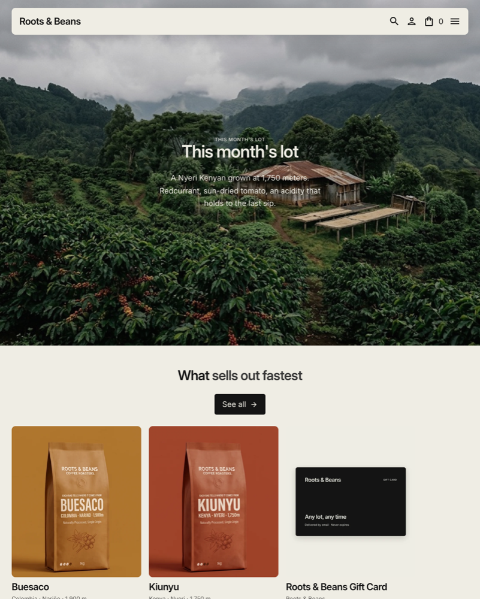

Tessera
Tessera is a Shopify theme for brands that tell the story behind each product, whatever they sell: apparel, beauty, home goods, crafts, food and drink. Every product page can show the details that matter to your customers, from origin and materials to care and dimensions.

Getting started
- In your Shopify admin, go to Online Store > Themes and add Tessera from the Theme Store.
- Click Customize to open the theme editor. Every page template is built from sections you can add, remove and reorder.
- Set your logo and main menu in the Header, then your colors and fonts in Theme settings.
- If your products have details worth showing (origin, materials, care, ingredients), set up the lot metafields so the lot sheet and product cards fill in automatically.
- When everything looks right, click Publish.
Theme settings
Open Theme settings (the gear icon in the theme editor).
| Group | Setting | What it does |
|---|---|---|
| Colors | Color scheme | The paper, ink and accent colors used across the store. |
| Colors | Photo veil opacity | Darkens photos under text, from 0 to 60%, so text stays readable on any image. |
| Typography | Headings, Body | The fonts for headings and running text, picked from the Shopify font library. |
| Layout | Section rhythm | Editorial leaves generous space between sections; Dense tightens it for larger catalogs. |
Header
The header floats above the page as a card. It hides when a visitor scrolls down and comes back as soon as they scroll up.
| Setting | What it does |
|---|---|
| Logo | Your logo image. Without one, the store name is shown in text. |
| Logo height | The height of the logo image in the header. |
| Menu | The main menu, shown on desktop and in the mobile menu. |
| Customer account menu | The menu shown in the customer account pop-up. |
Home page sections
Featured lot hero
A full-width photo with the product you want to put forward. Choose a Featured product, a Background image, an Eyebrow, a Text and a Button label. Without a product, the hero shows Title when no product is selected.
Featured products
A horizontal row of products. Pick a Collection as the source, set Products to show, and write the Heading and its Heading, accented part, shown in a lighter tone. Turn on Show "See all" button to link to the full collection. Without a collection, the section shows your whole catalog.
Brand context
A photo with a card that tells your story: Background image, Eyebrow, Heading, Text, and a Link label with its Link.
Lot sheet
The traceability sheet of one product. See Lot sheet and metafields.
Journal
The latest articles of a Blog, in a horizontal row. Set Articles to show and the Link label.
Customer reviews
Up to six Review blocks, each with a quote and its author.
Lot sheet and metafields
The lot sheet shows up to five rows of facts about a product. You name each row: origin,
materials, dimensions, care, ingredients. The demo uses washing station, altitude, harvest
and roast date. Each row reads a product metafield in the
signet namespace, so the same section fills in for every product.
- In your admin, go to Settings > Custom data > Products and add a definition for each row you want, in the
signetnamespace. - Turn on Storefront access for each definition, otherwise the theme cannot read it.
- Fill in the values on each product page, in the Metafields card.
| Key | Type | Example |
|---|---|---|
signet.origin | Single line text | Kenya · Nyeri · 1,750 m — also shown under the product name on cards |
signet.washing_station | Single line text | Kiunyu Factory |
signet.altitude | Single line text | 1,750 m above sea level |
signet.harvest | Single line text | November 2026 |
signet.roasted | Single line text | 3 December 2026 |
signet.varietal | Single line text | SL28 · SL34 |
In the section, each row has a Row label, a Metafield key in the signet namespace and a Fallback value, shown when a product has no value. You can rename the rows and point them to other keys.
Product page
- Media gallery: images, Shopify-hosted videos, YouTube and Vimeo videos, and 3D models, which visitors can turn around and view in augmented reality on supported phones.
- Variant images: give each variant its own image in the admin; choosing the variant shows its image.
- Unit price: when a variant has a unit price measurement, the price per unit is shown next to the price.
- Subscriptions: with a subscription app, the purchase options appear above the buttons, and the cart shows the chosen plan.
- Show store pickup availability: shows whether the product can be picked up today, and where.
- Show complementary products: two products to buy with this one, set in the Search & Discovery app under Product recommendations.
- Collapsible row blocks: tasting notes, brewing tips, shipping details. Add as many as you need.
- App blocks can be added to the product information.
Collections and filters
The collection page lists products in a grid with Show filters and Show sorting. Filters come from the Search & Discovery app: availability and price by default, and any product metafield you add, such as origin. Set Products per page and choose whether to Show collection description.
Search opens from the magnifying glass in the header and suggests products, collections, articles and pages as the visitor types.
Cart and checkout
Adding a product opens a cart drawer on the side of the page. The cart page lists each line with its quantity, plan and price, and an order summary. Turn on Show accelerated checkout buttons to show the express checkout buttons of your payment providers, such as Shop Pay, Apple Pay or Google Pay, and write the Empty cart text.
Blog and articles
The blog page opens with a Featured article and continues with an Article list. Article pages can Show reading time and Show share link.
Pages and contact
Standard pages show your page content in a comfortable reading column. The contact page adds a form and an info card with your Address, Email and opening hours.
Footer
- Show email signup: a newsletter form over a background image.
- Up to four Menu blocks, each shown as a column with its heading. A column without links is hidden.
- Show country/region selector and Show language selector, filled from your markets and languages.
- Show Follow on Shop button, available once the Shop channel is set up and Shop Pay is active.
More sections
- Custom section: a free-form section with an optional Background and any theme blocks.
- Custom Liquid: paste your own Liquid code.
- Apps: a section to hold app blocks.
- Age verifier: asks visitors to confirm their age before entering. Set the Minimum age, the texts and Where declining leads.
- Password page: shown while your store is password protected.
- Gift card: the page customers receive with their gift card code.
Motion and accessibility
Sections reveal themselves gently as they come into view, element by element. The motion is built with CSS only and loads no animation library. Visitors who ask their device to reduce motion see the page without any animation, and so do browsers without JavaScript.
Every interactive element can be reached with the keyboard, the cart drawer and the age verifier trap focus while they are open, and images use the alt text you write in the admin.
Languages
Tessera ships in English. To sell in other languages, add them in Settings > Languages and translate the theme with the free Translate & Adapt app from Shopify.
FAQ
Do I need to sell coffee to use Tessera?
No. The demo store is a coffee roaster, but Tessera fits any kind of product: apparel, beauty, home goods, crafts, food and drink. Rename the lot sheet rows to match your products.
The lot sheet shows the fallback values. Why?
The metafield definitions are missing, or their storefront access is off. See Lot sheet and metafields.
Filters do not appear on my collection page.
Install the free Search & Discovery app, then add filters under Filters. Also check that Show filters is on in the collection section.
The complementary products do not show on the product page.
Choose them for each product in Search & Discovery, under Product recommendations, and keep Show complementary products on.
Can I turn the animations off?
Visitors who reduce motion on their device see no animation. The motion is part of the theme design and has no global switch.
How do I update Tessera?
When a new version is out, Shopify shows it in Online Store > Themes. Updating adds a new copy of the theme with your settings, which you can review before publishing.
How do I get help?
Use the support form. We answer within two business days.
Support
Something does not work as described here? Contact The Frenchises Studio through the support form or at matis@thefrenchises.studio. We answer within two business days, and fix critical bugs right away.